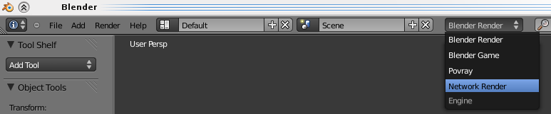
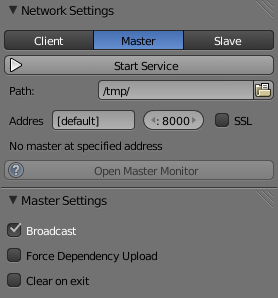
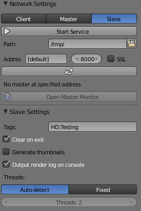
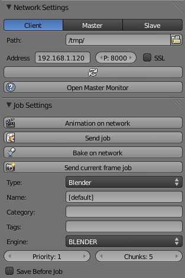
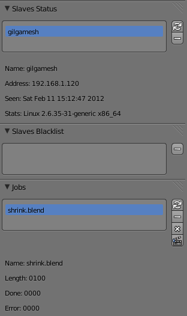

Network Render do Blender
O Blender Network Render é um sistema de renderização distribuída incluído no código da aplicação Blender. Permite criar facilmente uma renderfarm tanto em ambiente local (LAN) como através da Internet.
Para ativar esta opção deverá escolher o Network Render como motor. Se não tiver esta opção disponível, deverá ativar primeiro a opção através da janela de Add-Ons (User Preferences > Addons).

O funcionamento do Blender Network Render assenta na existência de três tipos de entidades:
- Master: o computador que coordena a distribuição. Só existe um por rede.
- Client: computador que envia Jobs (tarefas de renderização) e para onde é enviado trabalho final ou de onde é possível recolher frames renderizadas.
- Slave: computador que renderiza. Quantos mais Slaves, mais distribuída é a renderização e, pelo menos teoricamente, é mais rápido o processo.
Na realidade, o mesmo computador pode desempenhar em simultâneo as 3 funções. Para isso, basta iniciar 3 instâncias diferentes do Blender Network Render e escolher uma função diferente para cada uma delas.
O processo de organização de uma renderfarm com o Network Render é rápido. Em alguns minutos, se tiver uma rede local e computadores disponíveis, pode criar uma renderfarm caseira.
- Crie o Master
- 2º Crie tantos slaves quanto possível
- 3º Inicie o Cliente para enviar Job.
NOTAS
- Pode ativar estes processos por linha de comandos (sobretudo útil para renderfarms dedicadas).
MASTER
Para iniciar o Master, escolha a opção Master e clique em Start Service.

Para parar, clique em ESC, como se interrompesse um render normal.
-
Path: local onde o Master irá gravar ficheiros dos jobs (tarefas de renderização), resultados, logs, etc.
- Pode especificar o IP e a porta. Deixe em [default] se quiser que o master esteja a escutar toda a rede (todos os IP) na porta definida.
- SSL: utiliza SSL (Https) para comunicação encriptada com clientes e slaves.
- Open Master Monitor: abre interface web para informação e gestão do funcionamento da renderfarm. A página fica disponível em http://master_ip_address:master_port
- Broadcast: envia para a rede o IP e porta do Master. O Master fica visível na rede.
- Force Dependency Upload: força o cliente a fazer upload dos ficheiros dependentes
- Clear on exit: remove a pasta criada em Path quando o Master é desligado.
SLAVE
Para iniciar o Slave, escolha a opção Slave, clique no botão de Refresh (duas setas) para detetar Master que esteja a fazer Broadcast na rede (Pode demorar alguns segundos). Depois de detetar Master, clique em Start Service.
Se o Master não estiver a fazer Broadcast, tem de introduzir IP e porta do Master.

Para parar, clique em ESC, como se interrompesse um render normal.
Path: local onde o Slave irá gravar ficheiros dos jobs (tarefas de renderização), resultados, logs, etc.
- SSL: utiliza SSL (Https) para comunicação encriptada com clientes e slaves.
- Open Master Monitor: abre interface web para informação e gestão do funcionamento da renderfarm. A página fica disponível em http://master_ip_address:master_port
- Tags: tags atribuídas ao Slave (separadas por ponto e vírgula). Um Slave só recebe Job se tiver as mesmas tags atribuídas ao Job. Permite ter vários Slaves a serem utilizados para Jobs diferentes.
- Clear on exit: remove a pasta criada em Path quando o Slave é desligado.
- Generate thumbnails: Cria thumbnails do resultado da renderização. Caso contrário, só serão criados mediante pedido do Master.
- Output render log on console: produz log do processo de renderização.
- Threads: número de threads que o Slave utiliza para renderização. Permite reservar processamento no computador que serve de Slave para outras tarefas (muito útil caso o Slave também esteja a ser utilizado para outras tarefas).
CLIENT
Para enviar um Job de renderização do seu computador:
Abra o ficheiro blend que pretende renderizar e confirme os settings (dimensão, resolução, etc.)
Grave o ficheiro.
Inicie o Network Render e selecione modo Client. Clique no botão de Refresh (duas setas) para detetar Master que esteja a fazer Broadcast na rede (Pode demorar alguns segundos).

Caso o Master não esteja a fazer Broadcast, tem de introduzir IP e porta do Master.
Opção mais fácil: Clique em Animation on Network e aguarde pela devolução das frames renderizadas quando o Job estiver concluído.
NETWORK settings
- Path: local onde o Client irá gravar ficheiros temporários de renderização.
- Address: IP e Porta do Master
- SSL: utiliza SSL (Https) para comunicação encriptada com clientes e slaves.
- Open Master Monitor: abre interface web para informação e gestão do funcionamento da renderfarm. A página fica disponível em http://master_ip_address:master_port
JOB Settings
- Animation on network: envia ficheiro aberto como Job para o Master e fica a aguardar pelo resultado. É um processo similar a uma renderização normal só que esta é feita nos Slaves.
- Send job: envia ficheiro aberto como Job para o Master. Sempre que quiser, faça CTRL+F12 (renderizar animação) para recolher frames renderizadas até esse momento.
- Bake on network: envia Job de baking.
- Send current frame job: envia ficheiro aberto como Job para o Master mas apenas para renderizar frame atual.
- Name: nome do Job. [default] utiliza nome do ficheiro blend
- Category: Categoria do Job (opcional).
- Tags: tags atribuídas ao Job (separadas por ponto e vírgula). Um Job só será enviado para um Slave caso este também contenha todas as tags do Job.
- Engine: Render engine a utilizar para renderização.
- Priority: prioridade do Job. Se tiver dois Jobs, um de prioridade 1 e outro de prioridade 2, o Master irá dar 33% do processamento ao 1 e 66% ao 2 (conta como se fosse 2 Jobs).
- Chunks: quantidade de frames a realizar por Slave em cada Job atribuído.
- Save Before Job: força a gravação da versão atual antes de enviar para o Master.
Slaves Status
Lista dos Slaves conectados aos Master.

- Refresh: atualiza lista.
- Remove: Move Slave para Blacklist.
Slaves Blacklist
Lista dos Slaves na Blacklist
- Remove: Remove Slave da Blacklist.
Jobs
Lista dos Jobs no Master.
- Refresh: atualiza Jobs nos Master.
- Remove: Remove Job do Master.
- Remove All: Remove todos os Jobs do Master.
- Get Results: recolhe todas as frames renderizadas do Job. Resultado são descarregados como EXR para a atual pasta de Output.